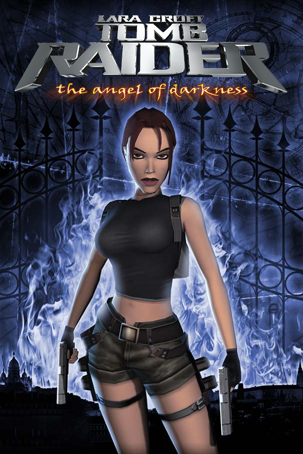

Tomb Raider: The Angel of Darkness
Tomb Raider: The Angel of Darkness
Detalhes
|  | |
| Tempo de jogo | Não Jogado |
| Última Atividade | Nunca |
| Adicionado | 05/08/2024 22:05:10 |
| Modificado | 10/03/2025 0:25:05 |
| Status de Conclusão | Not Played |
| Biblioteca | Gog |
| Fonte | GOG |
| Plataforma | PC (Windows) |
| Data de Lançamento | 20/06/2003 |
| Pontuação da Comunidade | 63 |
| Avaliação da crítica | 51 |
| Pontuação do Usuário | |
| Gênero | Action-adventure Stealth |
| Desenvolvedor | Core Design |
| Editor | Eidos Interactive |
| Funções | Single Player |
| Links | Wikipedia |
| Tag | [EMT] Video Micro missing [EMT] Video missing |
Descrição
Tomb Raider: The Angel of Darkness is a 2003 action-adventure game developed by Core Design and published by Eidos Interactive for PlayStation 2 and Microsoft Windows. A Mac OS X port was developed by Beenox and published by Aspyr the same year. It is the sixth instalment in the Tomb Raider series, acting as a direct sequel to Tomb Raider: The Last Revelation and Tomb Raider: Chronicles. The storyline follows Lara Croft as she attempts to clear herself of being the suspect of her former mentor Werner Von Croy's murder while investigating the activities of a black magic cult. The gameplay follows series tradition, with Lara navigating platforming environments while incorporating stealth and character growth elements.
The game's development began three years before its release. The intention was to create a different game from previous entries in the franchise, one that could compete better with newer action games and fully exploit the potential of the sixth generation of gaming platforms. It was also planned to be the first in a new trilogy of Tomb Raider games released for the new generation. However, development was fraught with difficulties, which led to the game being delayed twice and numerous planned sections of the game were scaled back in order to meet deadlines.
Despite selling 2.5 million copies worldwide, The Angel of Darkness received generally negative reviews from critics; while some praise went to its narrative, the game was widely faulted for its poor controls, camera, and numerous technical issues. In the aftermath of the game's release, the planned trilogy of games was scrapped, and the development of the franchise was transferred to Crystal Dynamics for the next entry in the series, Tomb Raider: Legend (2006). A remastered version of the game was included in Tomb Raider IV–VI Remastered, released in 2025.